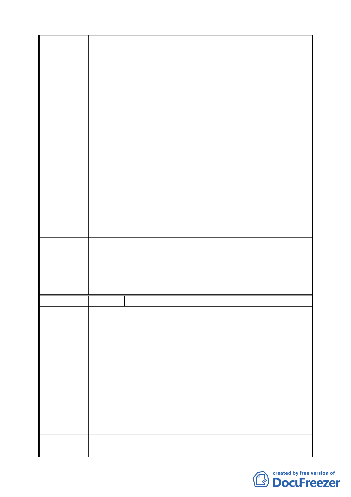

不宜仍以舊觀念看待本問題，既然本案之癥結在於有悖
都市計畫之衡平精神，且依建築法令並非不可縮減迴車
道為十二公尺，則 貴府為何始終不按新法規之精神解
決就問題？
按異議人前依都市計畫法第二十六條但書規定：擬訂計
畫之機關每年至少應通盤檢討一次，依據發展情況，並
參考人民建議作必要之變更，對於非必要之公共設施用
地，應予撤銷並變更其使用。爰此，經向 貴府都市發
展局請求將本案納入北投地區都市計畫通檢討案，提交
都委會審議。詎料，陳情都年後始經 貴府都市發展局
於民國八十九年八月十一日以北市都二字第八九二一六
八九二○○號函復議人，仍將納入北投區都市計畫通盤
檢討案之人民陳情意見綜理表內，未來將並提兩級都委
會審議。異議人只好靜待審議解決，然而此次公告之北
投區都市計畫通盤檢討案，竟未納入檢討之範圍，仍本
案維持原計劃，始異議人有受騙之感覺，殊為痛心，政
府機關豈能言而無信？
建 議 辦 法 請重新將本案納入本次之通盤檢討案。
93.12.27 專案小組第十次審查會議：同意恢復六十六年一月
專案小組
結論
十一日府二字第五四六六九號公告細部計畫之前內容，迴車
道直徑由直徑由 15 公尺縮小為 12 公尺。
委員會議
決議
同意依專案小組審查結論辦理。
編
號2
陳情人 劉由美
建議位置：北投區振興段三小段 0293-0000 地號（北投區懷
得街 48 巷）
建議理由：本巷自民國六十年即以具有法規上存在的事實。
一、本巷早在民國六十年興建時建照申請時建築線即由懷德
街引進。
陳情理由
二、原住戶與建商中國房屋開發公司之買賣契約上亦明示有
本巷道存在。
三、台北市政府於民國七十三年六月修訂之（修訂住宅區放
寬分區管制....計畫案），公告時本巷也明列公告圖上。
四、本巷門牌也早在民國六十年三月經由北投區公所核准。
五、本巷曾於民國八十四年九月十五日在市議會開過巷道打
通問題協調會。
建 議 辦 法 請將 48 巷接通懷德街。
專 案 小 組 93.12.9 專案小組第九次審查會議：建議事項非關都市計畫問
第 四四 頁，共 49 頁